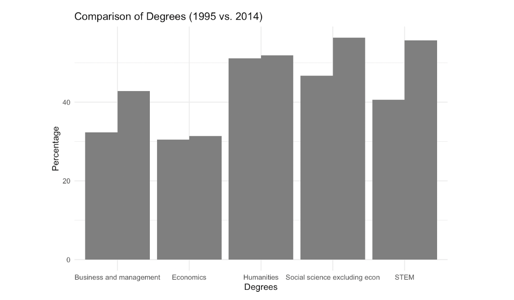

flowchart LR
A[Social conditioning eliminated] --> D(Output)
B(Gender pay equality) --> D{Output}
C(More economic opportunities for women) --> D{Output}
D --> E[Economic growth potential]
D --> F[Labour efficiency]
Data Story Visualizations
The Glass Ceiling and Leaky Pipeline: Let’s talk about the gender inequality in the workforce.
Let’s define terms
The glass ceiling is a phenomenon that describes the existence of artificial barriers that slow down the growth of women in the workforce. These factors can be inherent such as the will for women to value personal life more than professional life with age, emotional inclination of women, or the social (gender-biased) conditioning such as the need to tend to domestic duties. They can also be external such as the gender pay gap, inequality in the workforce in terms of opportunities or the gender-biased discriminatory attitude of superiors towards their juniors in the field.
The leaky pipeline is a phenomenon that explains why women disappear as they move up the ranks in their respective fields like a leaky pipeline. There are less number of women at the higher ranks of different fields.
Why Economics?
Although this type of gender gap/inequality exists for other fields as well, the inequality is much stronger for economics than in other social sciences. Most researchers at current do realize that women are underrepresented in STEM fields and thus, required measures are starting to be put in place. There is very slow growth for the same in economics and researchers and the general public at large are not aware of the gap in economics and how slow the change is taking place. The gender gap in economics also indicates some general bias in science since economics unlike other social sciences requires and relies heavily on analytical skills and mathematics and statistics.
It is important to note this gender gap because it is not only for women in the field who endure sexist policies and hostile behaviour but even government policies would be different if more women were involved in the committees who formulated them. Some famous economists even mentioned that “economics is the worst field to be a woman in.”
Hence, the field is mostly dominated by men in terms of faculty members in universities or positions in banks, etc, relative to the overall population and relative to other disciplines.

Visualization 1
What is the number of identified positions and senior positions of women by different types of institutions?
Write-up explaining what was insightful from the visualization
- senior positions will be a very small number as compared to the total identified positions- expand on that and why
- different colours for the dots and bars and to be made interactive
- this will overall be a bar graph with the dots shown on it (one point/dot for each bar since it is grouped by type of institution)

Visualization 2
What is the number of identified positions and senior positions of women by different regions of the world?
Write-up explaining what was insightful from the visualization
- is it only in the US or is it everywhere- graph will show accordingly
- again, dots for senior positions and bars for identified, bar graph and points for each bar grouped by institution
- trying to be made into a world map to show distribution of both identified positions and senior positions
Visualization 3
What is the difference in number of women at entry level and senior level?
Write-up explaining what was insightful from the visualization
- this will be a line graph and the colours of the lines will be different
- x-axis will be the region and the y-axis will be entry and senior level because we are showing the differences in region as well as the entry and senior level. the differences in entry and senior level number of women can be differentiated in different regions easily
Visualization 4
Write-up explaining what was insightful from the visualization
- here the ranking effect will be talked about
- there will be two scatter plots- if that cannot be shown side by side then they will be shown separately
- this will answer a bigger question if gender gap actually affects the number of women and hence, leading to glass ceiling and leaky pipelines phenomenon
Overall story
I will add the writeup for importance of the story here and why is it interesting and how relevant it is. Final statistics will be added here to create emphasis.
In the end, I will also be adding an overarching flowchart with all information summarized similar to what I have on the about page-
Economic Growth Potential:
According to a report by McKinsey & Company, advancing women’s equality and reducing the gender gap in the workplace could add $12 trillion to global GDP by 2025. There is a lot of potential in women who are getting educated and shifting to the workfield- it is important to recognize and utilize the potential to add to the labor productivity in the economy.
Labor Market Efficiency: According to the World Economic Forum’s Global Gender Gap Report 2020, reducing gender disparity in the workplace can improve labor market efficiency, contributing to economic growth. This means that workers should be allocated based on skills, qualifications and merit rather than gender/sex, resulting in more optimum use of human resources. This efficiency will then translate into greater productivity and economic growth, because companies and industries will operate at their full potential.
Reducing Income Inequality: The gender pay gap remains a significant issue in all fields. In the United States, women earned about only 82 cents for each dollar earned by men in the year of 2020, according to the U.S. Bureau of Labor Statistics. The glass ceiling and leaky pipeline phenomenon often contribute to this gender wage gap. By addressing these two issues, we can actually work to reduce income inequality. By not holding women back in their careers due to social conditioning, by systemic changes in mindset, they can progress to higher-paying roles and it will have a direct impact on narrowing the gender pay gap.